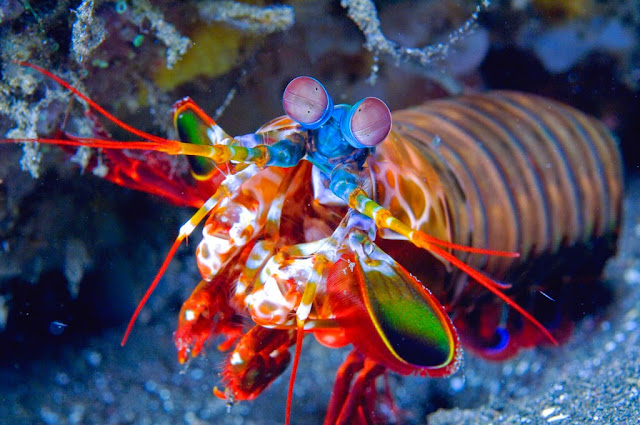

Fatos sobre o Stomatopoda
Stomatopoda, (Odontodactylus scyllarus), chamados popularmente de tamarutacas ou de lacraias-do-mar no Brasil, é uma ordem de crustáceos marinhos da subclasse Hoplocarida, que agrupa cerca de 400 espécies, caracterizadas principalmente pela morfologia da segunda pata torácica, que é modificada em apêndice subquelado, lembrando uma pata de louva-a-deus.
Classificação científica
| Reino: | Animalia |
| Filo: | Arthropoda |
| Subfilo: | Crustacea |
| Classe: | Malacostraca |
| Subclasse | Hoplocarida |
| Ordem: | Stomatopoda |
Curiosidades
Visão 👀

Existem mais de 450 espécies da ordem Stomatopoda, a qual pertence o camarão mantis, um crustáceo do tamanho de um dedo. Apesar desse nome, nenhuma delas é um camarão. Na verdade, esses animais possuem um parentesco mais próximo com caranguejos e lagostas.
E também possuem a visão mais complexa já evoluída no mundo animal. Por exemplo, cada olho do mantis se move de forma independente do outro. Além disso, eles podem detectar luz visível, ultravioleta e polarizada, enxergar em 3D e até ver câncer. Sem brincadeira – existe uma tecnologia de detecção da doença baseada nessa característica biológica do mantis.
Para você ter uma noção do que estamos falando, enquanto a visão humana conta com apenas dois tipos de fotorreceptores e três canais de cores (que nos permitem discriminar entre 10 milhões de tons), os dois olhos compostos do camarão mantis contêm mais de uma dúzia de fotorreceptores diferentes, alguns ultravioleta.
Boxe🥊
Esse pequeno ser marinho possui o soco mais forte já desvendado no mundo animal. Relativo à velocidade de uma bala de calibre 22 e ataca com a força de 1.500 newtons, esse animal é capaz de matar suas presas até quando erra seu golpe.
Considerado carnívoro suas principais presas são caranguejos, moluscos, gastrópodes e, inclusive, peixes. O movimento relativo ao soco é capaz de ferver a água ao seu redor, já pensou ser atingido por esse animal?